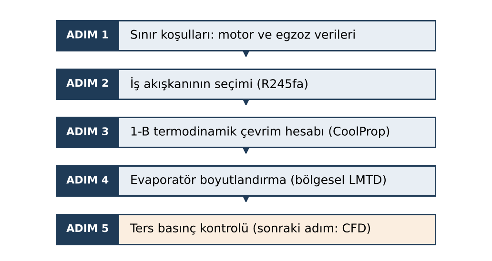
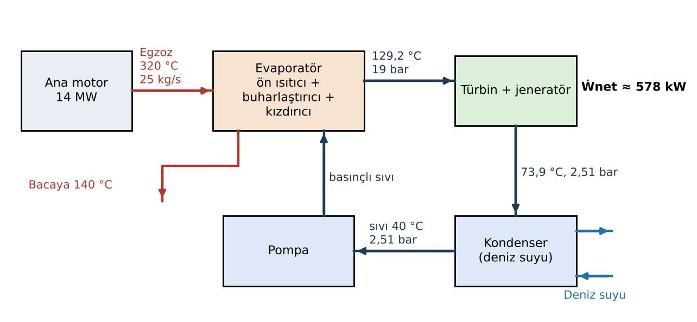
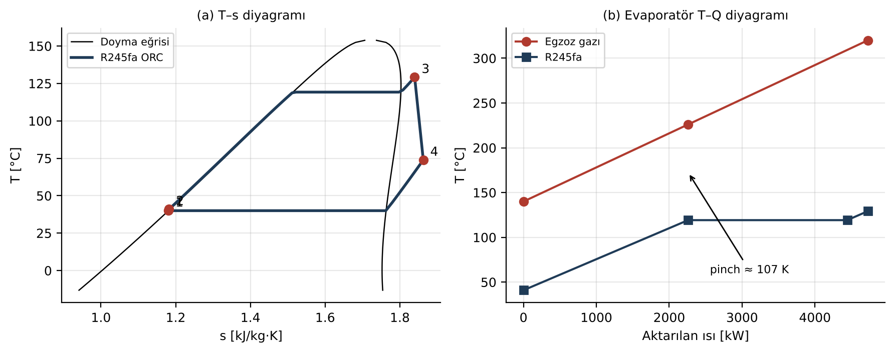

Özet—İçten yanmalı motorlarda yakıt enerjisinin büyük bölümü egzoz gazı ve soğutma suyuyla çevreye atılır. Bu çalışmada atık ısı geri kazanım teknolojileri (termoelektrik jeneratör, turbo-kompaund, buhar ve organik Rankine çevrimi) kısaca karşılaştırılmış, ardından 14 MW gücünde bir gemi dizel motorunun egzozu için R245fa akışkanlı bir organik Rankine çevrimi (ORC) tasarlanmıştır. Çevrim, akışkan özellikleri CoolProp ile alınarak 1-B enerji ve ekserji dengesiyle hesaplanmış; evaporatör bölgesel LMTD yöntemiyle boyutlandırılmıştır. Egzozun 320 °C'den 140 °C'ye soğutulmasıyla 4.725 kW ısı geri kazanılmakta, sistem 578 kW net güç üretmektedir. Bu değer %12,2 ısıl verime ve ana makine gücüne göre yaklaşık %4,1 ek güce karşılık gelir. Gerekli efektif ısı transfer alanı yaklaşık 780 m²'dir.
Anahtar Kelimeler—Atık ısı geri kazanımı, ORC, R245fa, evaporatör tasarımı, egzoz ters basıncı.
İçten yanmalı motorlarda yakıt enerjisinin yaklaşık %30–40'ı egzoz gazıyla atılır [1]. Ağır dizel motorlarda yüksek sıcaklıklı kaynaklar egzoz (200–600 °C) ve EGR (200–750 °C), düşük sıcaklıklı kaynaklar ise soğutma suyu (80–100 °C), yağlama yağı (80–120 °C) ve şarj havası soğutucusudur (50–70 °C) [2]. Egzoz, sıcaklığı yüksek olduğu için ekserjisi en yüksek kaynaktır. Soğutma suyunun enerjisi büyük, ekserjisi ise düşüktür. Gemi motorlarında aynı teknolojiler daha büyük ölçekte uygulanmaktadır [3]. Literatürde öne çıkan dört yöntem şunlardır:
320 °C'lik egzoz sıcaklığı, megavat ölçeğindeki güç ve ticari olgunluk birlikte değerlendirildiğinde bu çalışma için ORC seçilmiştir.
Tasarım Şekil 1'deki beş adımda yürütülmüştür.

Motor ve çevrim için kullanılan tasarım kabulleri Tablo I'de verilmiştir. Kükürtlü yakıtta çiğ noktası korozyonunu önlemek için egzoz çıkış sıcaklığı 140 °C ile sınırlandırılmıştır. Kondenser deniz suyuyla soğutulur; 25 °C deniz suyu için yoğuşma sıcaklığı 40 °C alınmıştır.
| Parametre | Sembol | Değer | Birim |
|---|---|---|---|
| Ana makine gücü (MCR) | — | 14 | MW |
| Egzoz debisi | ṁegz | 25,0 | kg/s |
| Egzoz giriş / çıkış sıcaklığı | Tegz,g / Tegz,ç | 320 / 140 | °C |
| Egzoz özgül ısısı | cp,egz | 1,05 | kJ/kg·K |
| Evaporatör basıncı | Pyüksek | 19,0 | bar |
| Kızdırma | ΔTkız | 10 | K |
| Yoğuşma sıcaklığı / basıncı | Tkond / Pdüşük | 40 / 2,51 | °C / bar |
| Türbin / pompa izentropik verimi | ηt / ηp | 0,80 / 0,75 | — |
| Evaporatör toplam ısı transfer katsayısı (kanatlı boru, gaz tarafı belirleyici) | U | 50 | W/m²·K |
Akışkan seçimi termodinamik performans, güvenlik ve çevresel etki birlikte değerlendirilerek yapılır [12]. Aday akışkanlar Tablo II'de karşılaştırılmıştır. Toluen ve metanol yüksek kritik sıcaklıkları sayesinde termodinamik açıdan avantajlıdır, ancak yanıcıdır; bu da kapalı makine dairesinde risk oluşturur. R123'ün ozon tüketme potansiyeli sıfır değildir. Bu nedenle yanıcı olmayan ve ozon tüketmeyen R245fa seçilmiştir. R245fa kuru bir akışkandır; genleşme sonunda kızgın buhar bölgesinde kalır ve türbinde damlacık oluşmaz.
| Akışkan | Tkr [°C] | Pkr [bar] | Güvenlik (ASHRAE 34) | Not |
|---|---|---|---|---|
| Toluen | 318,6 | 41,3 | Yanıcı | Yüksek verim, yangın riski |
| Metanol | 240,2 | 82,2 | Yanıcı | Islak akışkan, toksik |
| R123 | 183,7 | 36,6 | B1 | ODP ≈ 0,02; GWP 77 |
| R245fa | 153,9 | 36,5 | B1 | ODP 0; GWP 1030; kuru akışkan |
Kritik değerler CoolProp [13] ile alınmıştır. GWP değerleri IPCC AR4'e (100 yıl) göredir.
Hal noktaları CoolProp [13] ile hesaplanmıştır (Tablo III). Durum 1 kondenser çıkışındaki doymuş sıvı, durum 2 pompa çıkışı, durum 3 türbin girişindeki kızgın buhar, durum 4 türbin çıkışıdır. 19 bar'da R245fa'nın doyma sıcaklığı 119,2 °C'dir.
| Durum | P [bar] | T [°C] | h [kJ/kg] | Hal |
|---|---|---|---|---|
| 1 – Pompa girişi | 2,51 | 40,0 | 253,0 | Doymuş sıvı |
| 2 – Pompa çıkışı | 19,0 | 41,0 | 254,7 | Sıkıştırılmış sıvı |
| 3 – Türbin girişi | 19,0 | 129,2 | 499,9 | Kızgın buhar |
| 4 – Türbin çıkışı | 2,51 | 73,9 | 468,2 | Kızgın buhar |
Egzozdan alınan ısı ve akışkan debisi:
Türbin ve pompa güçleri, net güç ve ısıl verim:
Egzozdan alınan ekserji, mükemmel gaz kabulüyle Ėx = ṁcp[(Tg − Tç) − T0 ln(Tg/Tç)] = 1.894,7 kW'tır (T0 = 25 °C). Buna göre ikinci yasa verimi ηII = Ẇnet/Ėx = %30,5 olur. Kondenserde deniz suyuna 4.146,8 kW ısı atılır.
Evaporatörde akışkan önce sıvı olarak ısınır, sonra sabit sıcaklıkta buharlaşır. Bu nedenle tek bir ε-NTU bağıntısı yerine iki bölgeli LMTD yöntemi kullanılmıştır [14]: bölge 1 ön ısıtıcı, bölge 2 buharlaştırıcı ile kızdırıcının toplamıdır. Akışkan kabarcık noktasına (119,2 °C) ulaştığında egzoz sıcaklığı 226,1 °C'dir. Pinch sıcaklık farkı yaklaşık 106,9 K olduğundan ısı transferi her noktada mümkündür (Şekil 3b).
| Büyüklük | Değer | Birim |
|---|---|---|
| Egzozdan alınan ısı Q̇giren | 4.725 | kW |
| — Bölge 1 (ön ısıtma): ısı / ΔTlm / alan | 2.259,2 / 102,9 / 439 | kW / K / m² |
| — Bölge 2 (buharlaşma + kızdırma): ısı / ΔTlm / alan | 2.465,8 / 144,8 / 341 | kW / K / m² |
| R245fa debisi | 19,27 | kg/s |
| Türbin gücü / pompa gücü | 610,8 / 32,6 | kW |
| Net güç | 578 | kW |
| Isıl verim / ikinci yasa verimi | %12,2 / %30,5 | — |
| Toplam ısı transfer alanı | 780 | m² |
| Ana makineye göre ek güç | %4,1 | — |


Türbin çıkışı 73,9 °C'de kızgın buhardır. Bu ısının bir rejeneratörle pompa çıkışındaki sıvıya aktarılması, kondenser yükünü azaltır ve verimi artırır. Bu çözüm geliştirme önerisi olarak bırakılmıştır.
Evaporatör egzoz hattında bir akış direnci oluşturur. Artan ters basınç, motorun egzoz zamanındaki pompalama işini artırır ve ORC'den elde edilen kazancın bir kısmını geri alır [7]. Bu nedenle evaporatörün basınç kaybı, motor üreticisinin proje kılavuzunda verilen izin verilebilir egzoz karşı basıncı sınırıyla karşılaştırılmalıdır. Aynı ısı yükü için plaka-kanat tipi ısı değiştiriciler, gövde-boru tiplerine göre çok daha düşük basınç kaybı verir [15]. Bu çalışmada CFD analizi yapılmamıştır. Bir sonraki adımda kanatlı boru demeti CFD ile modellenmeli ve basınç kaybı doğrulanmalıdır. Egzoz ısı değiştiricilerinde SST k–ω ve RNG k–ε türbülans modellerinin deneyle uyumlu sonuç verdiği gösterilmiştir [16].
| Çalışma | Sistem / motor | Güç | Verim | Diğer |
|---|---|---|---|---|
| Yu vd. [17] | ORC R245fa, dizel motor (simülasyon) | ≤ 14,5 kW | ηgk ≤ %9,2; ηex ≤ %21,7 | Motor ısıl verimi +%6,1 |
| Yağlı vd. [18] | ORC R245fa, biyogaz CHP motoru (simülasyon) | 79,2 kW | ηth %15,5; ηex %27,2 | Kritik altı çevrim |
| Park vd. [10] | Rankine (etanol), 10,8 L dizel (deney) | — | — | Yakıt tasarrufu %3–5 |
| Kim vd. [5] | TEG, 40 modül, 6 silindirli dizel (deney) | 119 W | %2,8 | Δp 0,45–1,46 kPa |
| Pasini vd. [7] | Elektrik turbo-kompaund, 0,9 L benzinli (simülasyon) | — | — | BSFC ≤ %4; araç ≤ %2,7 |
| Bu çalışma | ORC R245fa, 14 MW gemi motoru (1-B hesap) | 578 kW | ηth %12,2; ηII %30,5 | Ana makineye +%4,1 |
Çalışmaların motor ölçeği ve yöntemi (deney veya simülasyon) farklıdır. Bu nedenle mutlak güç değerleri doğrudan karşılaştırılamaz; tablo verim ve kazanç mertebelerini göstermek içindir. Bu çalışmanın %12,2'lik ısıl verimi, R245fa ile yapılan çalışmalarla (%9–16) aynı aralıktadır. Bulunan değerler sürekli rejim ve ideal bileşen kabullerine dayanır. Isı kayıpları, kısmi yük çalışması ve ters basınç cezası eklendiğinde gerçek kazanç daha düşük olacaktır [11].
[1] R. Saidur, M. Rezaei, W. K. Muzammil, M. H. Hassan, S. Paria, and M. Hasanuzzaman, "Technologies to recover exhaust heat from internal combustion engines," Renewable and Sustainable Energy Reviews, vol. 16, no. 8, pp. 5649–5659, 2012, doi: 10.1016/j.rser.2012.05.018.
[2] S. Lion, C. N. Michos, I. Vlaskos, C. Rouaud, and R. Taccani, "A review of waste heat recovery and Organic Rankine Cycles (ORC) in on-off highway vehicle Heavy Duty Diesel Engine applications," Renewable and Sustainable Energy Reviews, vol. 79, pp. 691–708, 2017, doi: 10.1016/j.rser.2017.05.082.
[3] G. Shu, Y. Liang, H. Wei, H. Tian, J. Zhao, and L. Liu, "A review of waste heat recovery on two-stroke IC engine aboard ships," Renewable and Sustainable Energy Reviews, vol. 19, pp. 385–401, 2013, doi: 10.1016/j.rser.2012.11.034.
[4] D. Champier, "Thermoelectric generators: A review of applications," Energy Conversion and Management, vol. 140, pp. 167–181, 2017, doi: 10.1016/j.enconman.2017.02.070.
[5] T. Y. Kim, A. A. Negash, and G. Cho, "Waste heat recovery of a diesel engine using a thermoelectric generator equipped with customized thermoelectric modules," Energy Conversion and Management, vol. 124, pp. 280–286, 2016, doi: 10.1016/j.enconman.2016.07.013.
[6] H. Aghaali and H.-E. Ångström, "A review of turbocompounding as a waste heat recovery system for internal combustion engines," Renewable and Sustainable Energy Reviews, vol. 49, pp. 813–824, 2015, doi: 10.1016/j.rser.2015.04.144.
[7] G. Pasini, G. Lutzemberger, S. Frigo, S. Marelli, M. Ceraolo, R. Gentili, and M. Capobianco, "Evaluation of an electric turbo compound system for SI engines: A numerical approach," Applied Energy, vol. 162, pp. 527–540, 2016, doi: 10.1016/j.apenergy.2015.10.143.
[8] C. Sprouse III and C. Depcik, "Review of organic Rankine cycles for internal combustion engine exhaust waste heat recovery," Applied Thermal Engineering, vol. 51, no. 1–2, pp. 711–722, 2013, doi: 10.1016/j.applthermaleng.2012.10.017.
[9] S. Quoilin, M. Van Den Broek, S. Declaye, P. Dewallef, and V. Lemort, "Techno-economic survey of Organic Rankine Cycle (ORC) systems," Renewable and Sustainable Energy Reviews, vol. 22, pp. 168–186, 2013, doi: 10.1016/j.rser.2013.01.028.
[10] T. Park, H. Teng, G. L. Hunter, B. van der Velde, and J. Klaver, "A Rankine cycle system for recovering waste heat from HD diesel engines – experimental results," SAE Technical Paper 2011-01-1337, 2011, doi: 10.4271/2011-01-1337.
[11] B. Xu, D. Rathod, A. Yebi, Z. Filipi, S. Onori, and M. Hoffman, "A comprehensive review of organic Rankine cycle waste heat recovery systems in heavy-duty diesel engine applications," Renewable and Sustainable Energy Reviews, vol. 107, pp. 145–170, 2019, doi: 10.1016/j.rser.2019.03.012.
[12] E. H. Wang, H. G. Zhang, B. Y. Fan, M. G. Ouyang, Y. Zhao, and Q. H. Mu, "Study of working fluid selection of organic Rankine cycle (ORC) for engine waste heat recovery," Energy, vol. 36, no. 5, pp. 3406–3418, 2011, doi: 10.1016/j.energy.2011.03.041.
[13] I. H. Bell, J. Wronski, S. Quoilin, and V. Lemort, "Pure and pseudo-pure fluid thermophysical property evaluation and the open-source thermophysical property library CoolProp," Industrial & Engineering Chemistry Research, vol. 53, no. 6, pp. 2498–2508, 2014, doi: 10.1021/ie4033999.
[14] T. L. Bergman, A. S. Lavine, F. P. Incropera, and D. P. DeWitt, Fundamentals of Heat and Mass Transfer, 7th ed. Hoboken, NJ, USA: Wiley, 2011.
[15] S. Mavridou, G. C. Mavropoulos, D. Bouris, D. T. Hountalas, and G. Bergeles, "Comparative design study of a diesel exhaust gas heat exchanger for truck applications with conventional and state of the art heat transfer enhancements," Applied Thermal Engineering, vol. 30, no. 8–9, pp. 935–947, 2010, doi: 10.1016/j.applthermaleng.2010.01.003.
[16] M. Hatami, D. D. Ganji, and M. Gorji-Bandpy, "Numerical study of finned type heat exchangers for ICEs exhaust waste heat recovery," Case Studies in Thermal Engineering, vol. 4, pp. 53–64, 2014, doi: 10.1016/j.csite.2014.07.002.
[17] G. Yu, G. Shu, H. Tian, H. Wei, and L. Liu, "Simulation and thermodynamic analysis of a bottoming Organic Rankine Cycle (ORC) of diesel engine (DE)," Energy, vol. 51, pp. 281–290, 2013, doi: 10.1016/j.energy.2012.10.054.
[18] H. Yağlı, Y. Koç, A. Koç, A. Görgülü, and A. Tandiroğlu, "Parametric optimization and exergetic analysis comparison of subcritical and supercritical organic Rankine cycle (ORC) for biogas fuelled combined heat and power (CHP) engine exhaust gas waste heat," Energy, vol. 111, pp. 923–932, 2016, doi: 10.1016/j.energy.2016.05.119.